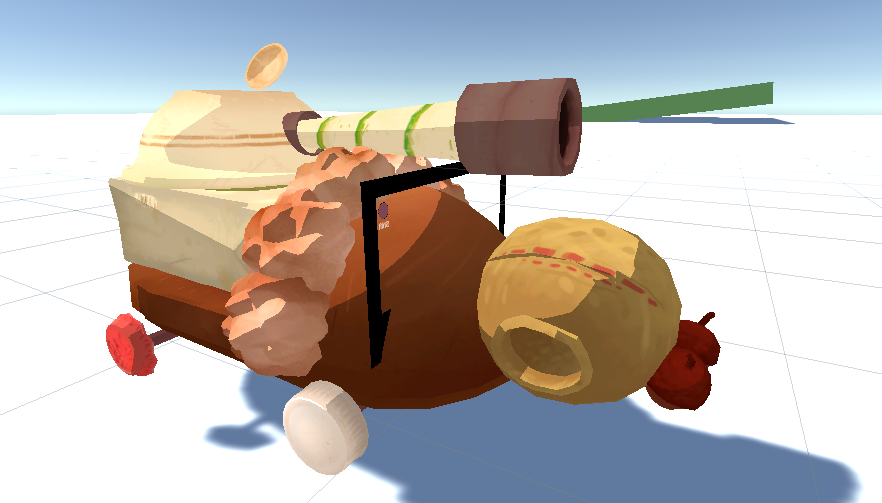
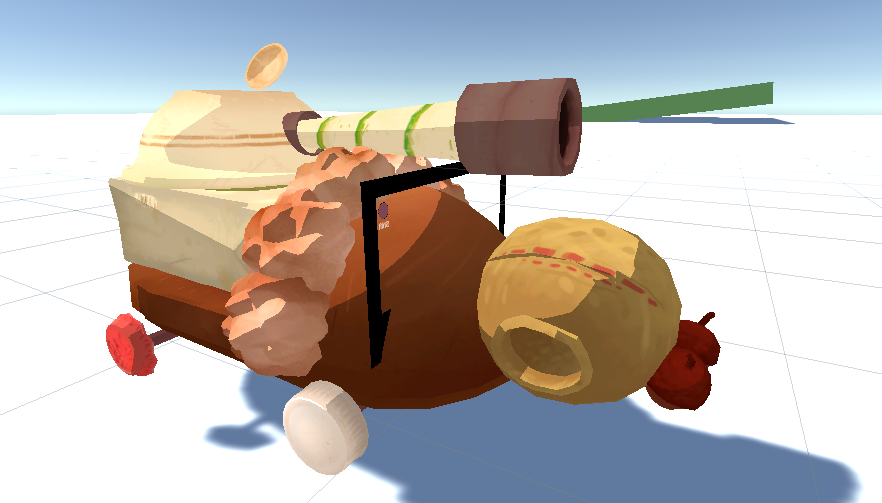

🐜 Antics GDC 2025

🚧 Currently In Development 🚧
A co-op local multiplayer game where players fight for their colony's survival!
Created as a submission to GDC’s ALT CTRL 2025 competition.
Introducing Antics! A two versus two co-op fighting game.
Where two players are charged with controlling a tank (one gunner and one driver),
both players must work together to annihilate the enemy team's tank and claim all the food for your colony!
As a programmer and technical designer on the team,
I was tasked with prototyping and implementing various in-game systems,
user-interfaces and custom graphic shaders.
User Interface 🖥️
One of the many systems I have created for the project, and one that I am personally proud of is the user interface for both players.
Specifically, the driver’s user interface.
As the driver, the player oversees managing accelerating, steering and operating the tanks manual transmission.
To fulfill your role as a driver, you must be able to react based off the information from the game.
Sooo, of course my solution is creating a user-interface system for the driver player. Where velocity,
engine speed and gearing is visualized in the video above.
Eventually turning into the UI system present in-game!
Communicating data and relaying information cohesively with the games built-in tank controller.
URP Shader Script
Towards the end of production, personally I was not satisfied with the look of the game.
As collectively we wanted the game to have a more saturated, fluorescent childlike cartoon aesthetic. Considering this,
I’ve created an unlit shader script that modifies the Unity render pipeline (URP).
Using Unity's built in HLSL shader scripting support.
In-game VFX

Environment VFX using a combination of Unity’s built-in particle system, HLSL (High Level Shader Language)
and C#

 
